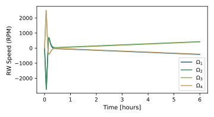
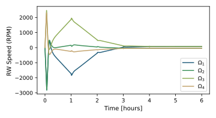
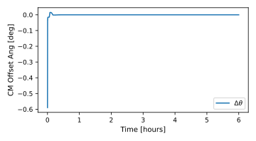

scenarioSepMomentumManagement
Overview
This script shows how to use a solar electric propulsion (SEP) thruster mounted on a dual-gimbaled platform to perform continuous momentum management of a spacecraft actuated with reaction wheels (RWs). The spacecraft is also equipped two large rotating solar arrays (SAs) which can continuously track the Sun to ensure maximum power generation. The goals for the SEP are to continuously point the thruster along the requested inertial thrust direction, while also maneuvering the gimbal in order to manage the momentum build-up on RWs due to external unmodeled perturbations. As a consequence, the optimal reference attitude for the spacecraft changes as the dual-gimbaled platform is articulated. In this script, the unmodeled perturbation consists in the solar radiation pressure (SRP) torque acting on the system, and modeled using Module: facetSRPDynamicEffector. The main flight software modules used in this script are the following:
Module: oneAxisSolarArrayPoint: computes the reference attitude for a spacecraft with multiple pointing requirements. For this application, the first requirement is to align the thruster with the requested inertial direction; the second requirement is to have the solar array drive axis as close to orthogonal as possible to the sunline.
Module: thrusterPlatformReference: computes the reference tip and tilt angles for the dual-gimbaled platform on which the SEP thruster is mounted on. Based on nominal expected thruster behavior, this module computes the gimbal angles that ensure that the resulting thruster torque feeds back on RW momentum build-up, therefore ensuring that the total net momentum is continuously dumped.
Module: thrustCMEstimation: estimates the location of the system’s center of mass (CM). In the presence of an unmodeled disturbance such as SRP the estimate is biased, and the estimated point is the location of a point \(C^*\) such that, when the thruster is fired through this point, the resulting torque counterbalances external unmodeled perturbations.
To ensure that attitude convergence is reached, in order for Module: thrustCMEstimation to process meaningful torque measurements, Module: thrusterPlatformReference is run at the frequency of one update per hour, as opposed to the frequency of one update every other second (0.5 Hz) for every other flight software module. Dynamics frequency is 2 Hz.
The script is found in the folder basilisk/examples and executed by using:
python3 scenarioSepMomentumManagement.py
Illustration of Simulation Results
The most interesting result of this analysis is shown comparing RW speeds with and without continuous momentum management. In the first plot, the thruster is fired through the system’s center of mass and therefore the thrust is not used to perform momentum management. Exact knowledge of the system’s CM location is used here. The wheel speeds increase linearly over time to compensate for the solar radiation pressure, eventually needing momentum dumping. In the second plot, the thruster is used to perform continuous momentum management, and the CM location is sequentially estimated. Wheel speeds oscillate during the initial transients when the CM estimate is bad, as a result of the thruster torque acting on the system. When the CM becomes good, the RW speeds settle without diverging. The value at which each wheel settles depends on the transients.
 The following two plots show the angle between the thrust vector and the true system CM. In the first plot, this angle immediately drops to zero, because knowledge of the CM is exact, and the guidance algorithm correctly aligns the thruster with the CM. In the second plot, the offset angle varies as the algorithm determines the location of the equilibrium point \(C^*\). At steady state, the thruster is fired at a small, constant offset with respect to the true CM.

The final two plots show the net external torques about the CM, projected on the plane orthogonal to the thrust vector \(\boldsymbol{t}\). In the first plot, because the thruster is fired through the CM, the only contribution is given by the SRP torque. In the second plot, the net torque goes to zero as the CM location becomes more accurate and the thruster is fired through the equilibrium point \(C^*\). In this situation the thruster torque exactly counters the action of the SRP torque according to:
- scenarioSepMomentumManagement.plot_attitude(timeData, dataSigmaBN, dataSigmaRN, figID=None)[source]
Plot the spacecraft attitude w.r.t. reference.
- scenarioSepMomentumManagement.plot_attitude_error(timeData, dataSigmaBR, figID=None)[source]
Plot the spacecraft attitude error.
- scenarioSepMomentumManagement.plot_external_torque(timeData, dataTorque, yString=None, figID=None)[source]
Plot the external torques.
- scenarioSepMomentumManagement.plot_neg_Y_pointing_error(timeData, dataAngle, figID=None)[source]
Plot the solar array angles w.r.t references.
- scenarioSepMomentumManagement.plot_net_torques(timeData, dataCM, dataNu, dataMB_B, dataM0B, dataThrLoc_F, dataThrVec_F, swirlTorque, dataSRP, figID=None)[source]
Plot the net external torques in the plane perpendicular to the thrust vector.
- scenarioSepMomentumManagement.plot_platform_angle(timeData, dataAngle, dataRefAngle, figID=None)[source]
Plot the platform tip and tilt angles w.r.t. references.
- scenarioSepMomentumManagement.plot_residuals(timeData, preFit, postFit, R, figID=None)[source]
Plot pre-fit and post-fit residuals on integral feedback torque measurements.
- scenarioSepMomentumManagement.plot_rw_speeds(timeData, dataOmegaRW, numRW, figID=None)[source]
Plot the RW spin rates.
- scenarioSepMomentumManagement.plot_solar_array_angle(timeData, dataAngle, dataRefAngle, figID=None)[source]
Plot the solar array angles w.r.t references.
- scenarioSepMomentumManagement.plot_solar_array_pointing_error(timeData, dataAngle, figID=None)[source]
Plot the solar array angles w.r.t references.
- scenarioSepMomentumManagement.plot_state_errors(timeData, data1, data2, figID=None)[source]
Plot the error between estimated CM and true CM.
- scenarioSepMomentumManagement.plot_thr_torque(timeData, dataCM, dataNu, dataMB_B, dataM0B, dataThrLoc_F, dataThrVec_F, swirlTorque, figID=None)[source]
Plot the thruster torque about CM.
- scenarioSepMomentumManagement.plot_thruster_cm_offset(timeData, dataCM, dataNu, dataMB_B, dataM0B, dataThrLoc_F, dataThrDir_F, figID=None)[source]
Plot the angle between thrust vector and system CM.
- scenarioSepMomentumManagement.run(swirlTorque, thrMomManagement, saMomManagement, cmEstimation, showPlots)[source]
The scenario can be run with the followings setups parameters:
- Parameters:
swirlTorque (bool) – When true, a swirl torque about the thrust vector is added, to simulate the swirling motion of the ejecta.
thrMomManagement (bool) – When false, the platform aligns the thruster with the CM location it receives as input. When true, the thruster is used to perform momentum management.
saMomManagement (bool) – When true, performs differential articulation of the solar arrays to exploit SRP to offload the reaction wheels.
cmEstimation (bool) – When false, the platform is connected to the true CM location message. When true, the platform is connected to the estimated CM location.
showPlots (bool) – Determines if the script should display plots.